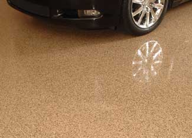

Of all the surfaces in your home, the garage or shop floor probably has the toughest duty. Though a concrete floor is a durable surface, it does have one major shortcoming. Concrete, even if finished to a smooth surface, is actually quite porous. Fluid leaks from vehicles and grime from tires can quickly work their way into the concrete and stain the floor. Besides being ugly, oil and fluid stains tend to attract and hold more dirt and grime, which is then tracked into the house or car.
Fortunately, the cure for this is simple; seal the concrete floor with specialty garage floor paint or cover it with mats or a modular decking system. The most common garage-floor coatings are epoxy-based paints and coatings. You can easily apply these in a weekend. Other options include polyurethane paint and even soy-based paint. Look for low- or zero-VOC (volatile organic compound) products that are better for human and environmental health. Finding low-VOC garage floor coatings from a local retailer may be more challenging than finding low-VOC wall paint. But check companies, such as H & C Concrete Coatings and eco-Protective Products, to begin your search.
After they’re applied, these garage-floor coatings really dress up the appearance of the garage and make the surface much easier to keep clean. You can simply wipe up spills and fluid leaks before they can be tracked into the house - and they generally won’t stain the floor.
Like all paint projects, much of the secret to a professional looking garage floor is in the preparation. The first step is to remove everything from the garage and thoroughly clean the floor surface. First, sweep up all the loose dirt. Then, follow the paint manufacturer’s instructions to prep and clean the floor; a commercial concrete cleaner or mixture of household bleach and water may be necessary to clean tough stains. A pressure washer can also be helpful for removing stains, but operating in a semi-enclosed area such as a garage can soak the walls and put a lot of moisture in the air. After the concrete is clean, it should be allowed to dry completely before moving on to the next steps. Some products recommend “etching” the surface with a concrete etching solution to make the surface rougher for a better bond by the coating.
With the floor clean, you can patch any chips and fill cracks in the floor. Concrete patch material works well for larger areas, and it’s easy to fill the cracks with a concrete mortar repair compound applied with a caulking gun. Some floor paints require a primer coat, others don’t. Again follow the application instructions on the can. Rolling out the floor paint is really the easy part of the job. Use a long-handle roller and a high-quality roller cover made for the material you’re applying.
Some epoxy floor paints will require two coats (especially if you didn’t apply a primer). Apply a light base coat and allow it to dry completely before applying the final finish coat. Most products recommend at least 24 hours of curing time before walking on the surface and as much as a week before you park anything on the treated floor.
Epoxy-based garage floor coatings are popular because they are relatively inexpensive (about $70 to cover 250 square feet) and widely available at hardware stores and home improvement centers. A little shopping will help you find the one that will work best for your situation. A variety of colors are available, and some have contrasting color flakes that are sprinkled over the wet floor surface to make it more visually appealing and add a bit of texture. The epoxy in these coatings bonds well to the concrete and makes the finish durable when properly applied.
Volatile organic compounds (VOCs) can be quite strong with many solvent or oil-based epoxy garage floor paints. If you choose to use this type of paint, always take proper precautions and use a high-quality respirator during application - and anytime you’re exposed to the vapors. Fumes can be heavy with these products, and VOCs aren’t the most environmentally friendly elements to work with. One alternative is to have the coating professionally applied, so you won’t have to deal with the fumes, though they will still be released into the atmosphere. A quick Internet search will reveal specialty garage floor coating outfits more than ready to manage the job for you. And some offer green products.
Another garage floor option is to install a mat or snap-together deck tiles instead of coating the floor. Mats are available in a variety of colors and patterns. Simple rug-like mats start at about $100. In addition to smooth surface mats, you’ll also find ribbed, coin and diamond-tread patterns.
Modular polypropylene snap-together decking surfaces are a popular and stylish way to go for designer garages and shops. These floor systems are free-floating and allow moisture to escape from the concrete floor below. Another advantage is that the tiles are easily replaced. If one section is damaged, simply replace a tile and the floor is as good as new. There are even a few floor tile products made from recycled materials.
Regardless of which product you choose, protecting your garage floor is an investment that will make your garage or shop space more enjoyable for many years to come.
For ideas for alternative types of garage floors, read I am building a garage, is there a cheap, green substance to take the place of concrete for the floor? If you’re interested in low-VOC paint, check out The Benefits of Low-VOC Paints.
What type of garage floor coatings have you used? Tell us your opinion in the comments section below.
|
 GARAGEFLOORCOATING.COM Garage floor coatings are available in several colors. Some companies offer products with flecks or chips in the coating. |
|
|